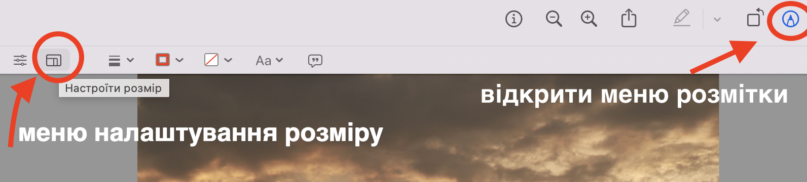
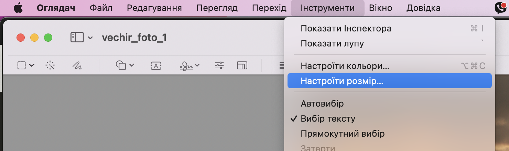
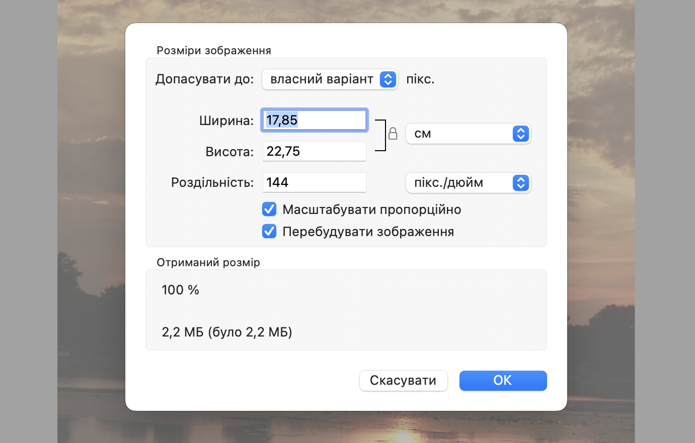
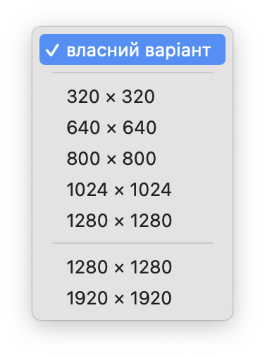
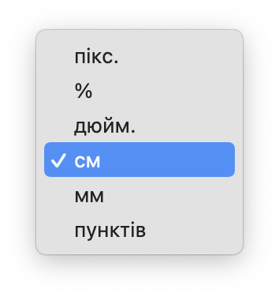

При роботі з фото іноді розмір файлів занадто великий щоб відправити його по електронній пошті або завантажити на сайт. Або розмір зображення(розширення зображення) не підходить під ваші задачі. В таких випадках можна змінити розмір та розширення зображення в стандартній програмі "Оглядач".
Змінити розмір або розширення фото в програмі "Оглядач" (Preview)
Щоб змінити розмір або розширення фото відкрийте його в програмі "Оглядач".
- В програмі "Оглядач" - натисніть кнопку "Показати панель розмітки" та натиснуть "Настроїти розмір" для налаштування розміру.

Або відкрийте меню "Інструменти" та оберіть "Настроїти розмір".

- Відкриється меню "Розміри зображення"

- Оберіть необхідне розширення зображення

- Оберіть необхідний розмір зображення в сантиметрах, в пікселях або іншому вімірюванні.

Також ви можете змітини роздільну здатність зображення в розділі "Роздільність". Якщо зменшити цю цифру від стандартної - розмір файлу та якість зображення зменшиться.
В розділі "Отриманий розмір" ви можете побачити яким буде розмір файлу після внесених змін.
Натисніть кнопку "Ок" щоб зберігти зміни, або "Скасувати", щоб відмінити зміни.
Що таке розширення зображення та коли його треба змінювати?
Розширення зображення вказує на кількість пікселів, які складають зображення. Зазвичай розширення вимірюється у пікселях у ширину та висоту, наприклад, 1920x1080. Чим більше пікселів, тим більша деталізація має зображення, але його розмір стає більшим.
Існує декілька випадків, коли може знадобитися змінити розширення зображення:
Зменшення розміру файлу: якщо вам потрібно зменшити розмір файлу зображення для зручності надсилання по електронній пошті, публікації в Інтернеті або для збереження на комп'ютері, зменшення розширення може допомогти знизити розмір файлу.
Прискорення завантаження сторінок: якщо ви публікуєте зображення на веб-сторінці, зменшення розширення може допомогти прискорити завантаження сторінки для відвідувачів.
Друкування зображення: якщо ви плануєте друкувати зображення на папері, вам може знадобитися змінити розширення, щоб забезпечити якісний друк.
Редагування зображення: якщо ви плануєте редагувати зображення, вам може знадобитися змінити розширення, щоб забезпечити більш детальну картину під час редагування.
Слід пам'ятати, що зменшення розширення може призвести до втрати деталей і зниження якості зображення.
Читайте більше статей про редагування зображень на сторінці Робота з зображеннями на мак